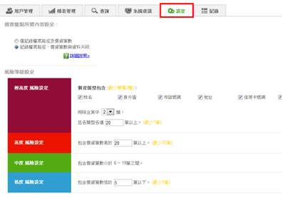
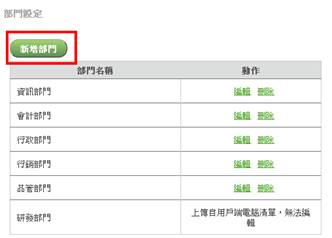
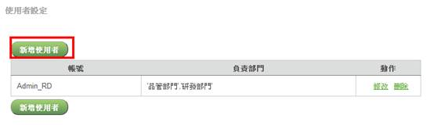
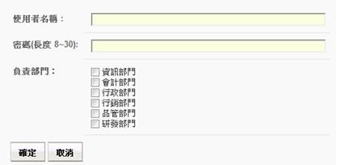

系統管理者可以在系統中設定部門管理者，部門管理者進入系統後只能觀看、查詢該部門的盤點資料。部門管理者的設定步驟如下：
（1）點選功能列中的設定按鈕。

（2）在部門設定中，點擊「新增部門」來建立部門。（註：用戶端清單中包含的部門，會自動產生在此部門列表，且無法刪除）

（3）在使用者設定中，點擊「新增使用者」來建立部門管理者。

（4）設定部門管理者的名稱、密碼以及負責部門後，按下確定按鈕即可完成。
